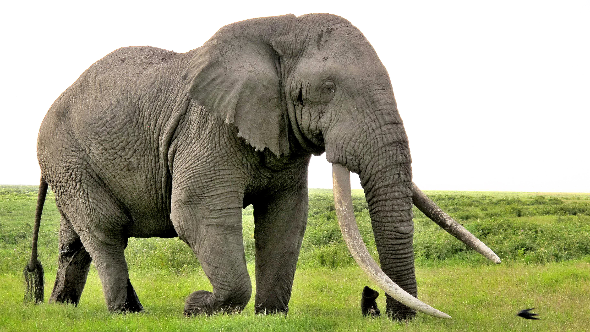
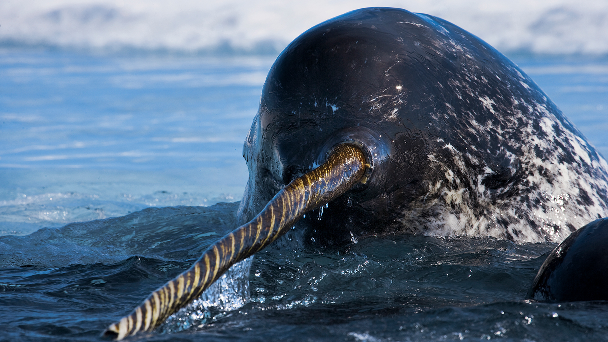
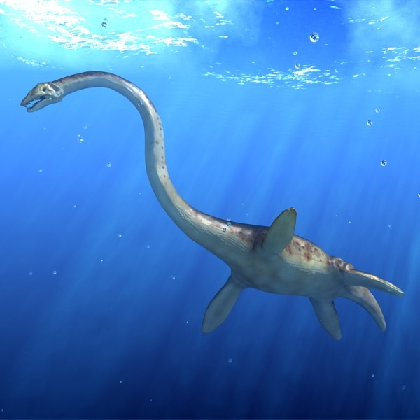
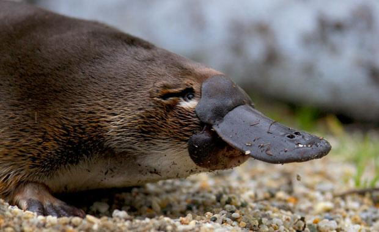

Adopt an Animal!
Snuffy the Elephant
Snuffy is a full-grown African bull elephant. Good with small children but afraid of ferrets. Potential owners must have a 4,000 acre backyard.
Snuffy's favorite things:
- Peanuts
- Accacia trees
- Villagers crops
Odysseus the Narwhal
Ody loves the cool climate and lots of mackerel. Okay with doctors, but hates going to the dentist. Would do well in a costal home.
Ody's favorite things:
- Saltwater
- Abundant fish stocks
- Being scratched between his eyes
Jimbo the Plesiosaur
Jimbo is an ancient plesiosaur and a strict vegetarian. He credits his diet with his impressive longevity. Jimbo is over 67 million years old.
Jimbo's favorite things:
- Visiting his cousin in Scotland
- Talking with gators about the old days
- Lavender scented anything!
Frank the Platypus
Frank can be very food agressive. Not for a house with small children. However, inside he has a sweet heart.
Frank's favorite things:
- Stabbing toddlers with his spike
- Tonkotsu Ramen
- Being a monotreme